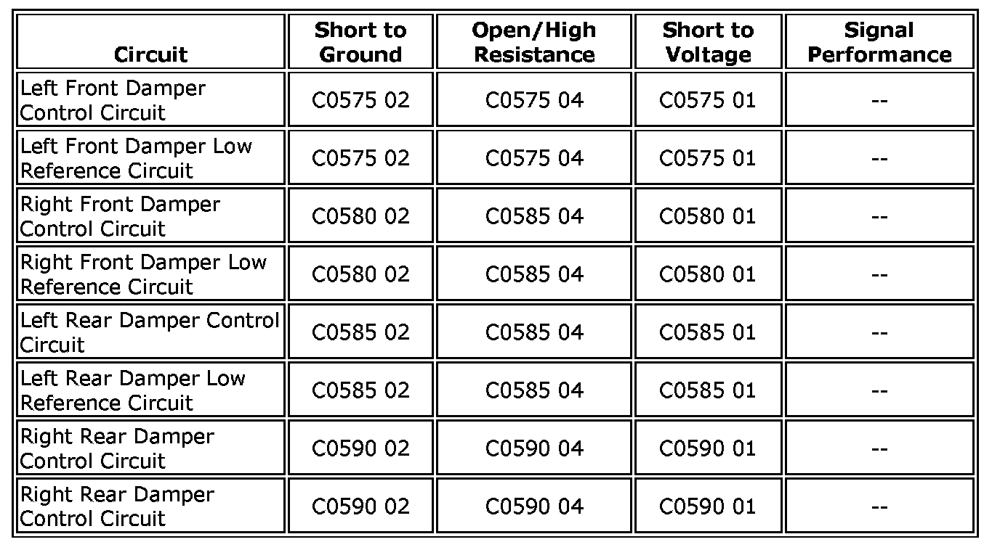

C0590
DTC C0575, C0580, C0585, or C0590
Diagnostic Instructions
- Perform the Diagnostic System Check - Vehicle prior to using this diagnostic procedure Component Tests and General Diagnostics.
- Review Strategy Based Diagnosis for an overview of the diagnostic approach Component Tests and General Diagnostics.
- Diagnostic Procedure Instructions provides an overview of each diagnostic category Component Tests and General Diagnostics.
DTC Descriptors
DTC C0575 01: Left Front Actuator Circuit Short to Battery
DTC C0575 02: Left Front Actuator Circuit Short to Ground
DTC C0575 04: Left Front Actuator Circuit Open
DTC C0580 01: Right Front Actuator Circuit Short to Battery
DTC C0580 02: Right Front Actuator Circuit Short to Ground
DTC C0580 04: Right Front Actuator Circuit Open
DTC C0585 01: Left Rear Actuator Circuit Short to Battery
DTC C0585 02: Left Rear Actuator Circuit Short to Ground
DTC C0585 04: Left Rear Actuator Circuit Open
DTC C0590 01: Right Rear Actuator Circuit Short to Battery
DTC C0590 02: Right Rear Actuator Circuit Short to Ground
DTC C0590 04: Right Rear Actuator Circuit Open
Diagnostic Fault Information

Circuit/System Description
The electronic suspension control module (ESCM) commands the damper solenoid ON and OFF. When the solenoid is initially energized, the supply voltage is then pulse width modulated (PWM). The amount the solenoid is activated is based on inputs from the driver tow/haul switch, road inputs, position sensor inputs, and the powertrain control module (PCM). The ESCM continuously compares each dampers command state with the state of their feedback circuits to ensure they agree.
Conditions for Running the DTC
The ignition is in the RUN position for 30 seconds.
Conditions for Setting the DTC
C0575-C0590 01
- Upon detection of the damper solenoid or the circuits to the solenoid are shorted to voltage when at 0-91 percent PWM.
- Allow 30 seconds for redetection after clearing codes.
C0575-C0590 02
- Upon detection of the damper solenoid or the circuits to the solenoid are shorted to ground when at 5-100 percent PWM for 3 consecutive ignition RUN cycles.
- Cycle the dampers for 30 seconds after clearing codes.
C0575-C0590 04
- The damper solenoid or the circuits to the solenoid are open when at 0-91 percent PWM for 3 consecutive ignition RUN cycles.
- Command the damper to the OFF state for 30 seconds after clearing codes.
Action Taken When the DTC Sets
C0575-C0590 01
- The DTC is stored in memory.
- The driver information center (DIC) displays the SERVICE SUSPENSION SYSTEM and SPEED LIMITED message.
- All dampers are disabled.
C0575-C0590 02 and 04
- The suspect damper is disabled.
- The DIC displays the SERVICE SUSPENSION SYSTEM.
- If any combination of 2 damper actuators short to ground or open circuit failures are simultaneously present, SPEED LIMITED will also be displayed in the DIC.
Diagnostic Aids
Before proceeding with the diagnostics, ensure the electrical harness connector at the suspect damper is fully engaged by pushing the harness connector toward the damper. If an audible click is heard, or substantial engagement travel is noted, ensure the remaining damper connectors are fully engaged as well.
Reference Information
Schematic Reference
Electronic Suspension Control Schematics Electrical Diagrams
Connector End View Reference
Electronic Suspension Control Connector End Views Diagrams
Description and Operation
Electronic Suspension Control Description and Operation Description and Operation
Electrical Information Reference
- Circuit Testing Component Tests and General Diagnostics
- Connector Repairs Component Tests and General Diagnostics
- Testing for Intermittent Conditions and Poor Connections Component Tests and General Diagnostics
- Wiring Repairs Component Tests and General Diagnostics
Scan Tool Reference
- Scan Tool Data List Scan Tool Testing and Procedures
- Scan Tool Data Definitions Scan Tool Testing and Procedures
- Scan Tool Output Controls Scan Tool Testing and Procedures
Circuit/System Verification
Ignition ON, with the scan tool command the damper actuators ON and OFF while jouncing the vehicle in the front and rear. The suspension should change stiffness when commanded between the ON and OFF state.
Circuit/System Testing
Important: Whenever repairing and/or replacing ALC system components, perform the Suspension Position Calibration procedure.
1. Ignition OFF, disconnect the harness connector at the appropriate suspension damper.
2. Perform this setup step in the following order:
2.1. Connect a test lamp between the damper connector control circuit terminal A and control circuit terminal B.
2.2. Ignition ON, with a scan tool, clear all ESC module DTCs.
3. Command the damper ON and OFF with a scan tool. The test lamp should turn ON and OFF when changing between the commanded states.
- If the test lamp is always ON, test the control circuit terminal A for a short to voltage. If the circuit tests normal, replace the ESC module.
- If the test lamp is always OFF, test the control circuits listed below. If all circuits test normal, replace the ESC module.
- Control circuit terminal A for a short to ground or open/high resistance.
- Control circuit terminal B for an open/high resistance or short to voltage.
4. If all circuits test normal, test or replace the suspension damper.
Component Testing
1. Ignition OFF, disconnect the harness connector at the appropriate suspension damper.
2. Test for 0.7-3.3 between the control terminal A and the low control terminal B of the suspension damper.
- If not within the specified range, replace the suspension damper.
Repair Instructions
- Shock Absorber and Spring Assembly Replacement Service and Repair
- Shock Absorber Replacement Service and Repair
- Control Module References for ESCM replacement, setup, and programming Programming and Relearning
Repair Verification
1. Install any components or connectors that have been removed or replaced during diagnosis.
2. Perform any adjustment, programming or setup procedures that are required when a component or module is removed or replaced.
3. Clear the DTCs.
4. Use the scan tool Diagnostic Counter Reset output control function to bypass the 3 consecutive ignition cycle requirement for setting a DTC. This will ensure that if a DTC was to be reset during the repair verification process, it will be displayed on the scan tool.
5. Turn OFF the ignition for 60 seconds.
6. Turn ON the ignition.
7. If the repair was related to a DTC, duplicate the Conditions for Running the DTC and use the Freeze Frame/Failure Records, if applicable, in order to verify the DTC does not reset. If the DTC resets or another DTC is present, refer to the Diagnostic Trouble Code (DTC) List - Vehicle and perform the appropriate diagnostic procedure.